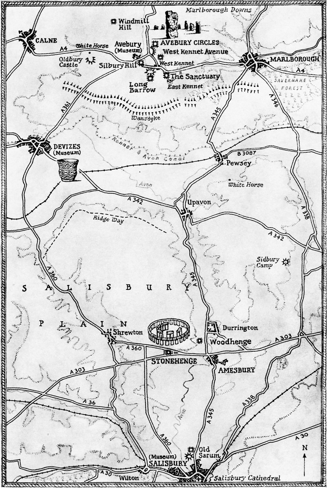
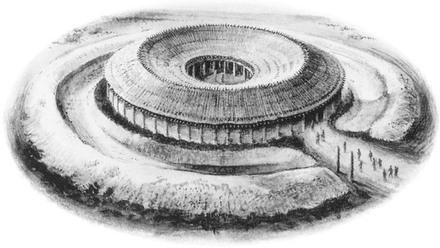
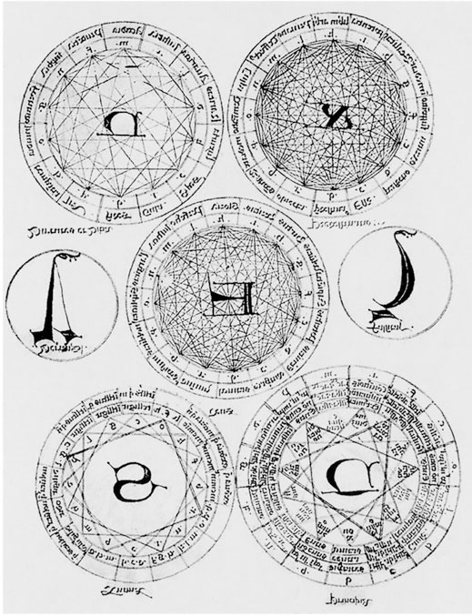
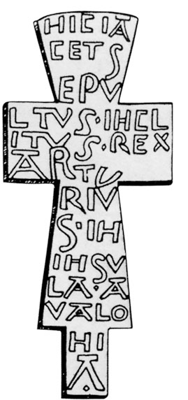
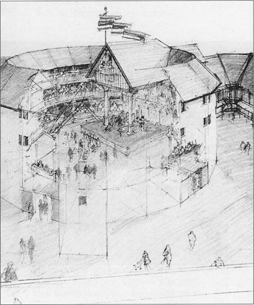

Capítulo 1
«Aquel que una vez pensó y actuó»
«Aquel que una vez pensó y actuó,
es todavía hoy pensamiento y acción.
Nada de lo verdaderamente existente muere».
John Dee
Aproximación de los vínculos distantes
(Stonehenge y el teatro «Globo»)
En 1996, durante mi estancia en Inglaterra, visité casi al mismo tiempo Stonehenge y el teatro «Globo», que ya había sido reconstruido y ofrecía las obras de Shakespeare. Si entre ambas visitas hubiera mediado un largo intervalo de tiempo, la extravagante idea de una posible conexión entre ambos no me habría asaltado.
Pero Stonehenge fue una verdadera conmoción. Los restos del santuario megalítico producen un efecto —no una impresión: un efecto— de fuerza monumental, de sacudida energética. E inmediatamente, por supuesto, nacen preguntas sin respuesta. Y también una extraña sensación, como si todo el conjunto estuviera distanciado, rodeado de una materia invisible, a pesar de que entonces se podía acercar uno hasta el santuario. En la tienda de Stonehenge se vendían folletos con los planos de la reconstrucción arquitectónica. Bajo una aparente cientificidad de la información, prácticamente no había nada. Es evidente, además, la convencionalidad de la datación y del propósito del antiguo conjunto. Una cosa estaba clara: que Stonehenge (como las huellas de otras construcciones semejantes) era un lugar de misterios cultuales sagrados, y esto es, para nosotros aquí, quizá, quizá, lo esencial. Aquí fue el lugar del Misterio universal, del acto mágico transfigurador que une el rito con el teatro.

El teatro «Globo» es también un lugar fascinante. Todo en él era interesante, pero especialmente el museo del teatro, que inesperadamente me sugirió la idea de los «vínculos distantes» entre dos conjuntos sagrados entre los cuales median, posiblemente, tres mil quinientos años, o incluso más. Pero ese tiempo no es de ruptura, sino de continuidad de las tradiciones culturales.
Ya en los años treinta del siglo XX se publicaban trabajos serios sobre los conjuntos megalíticos de las islas Británicas. La cronología moderna data la construcción de Stonehenge hacia el año 3000 a. C., es decir, la época de las pirámides egipcias, de los laberintos de Cnosos, de los trazados del altiplano de Nazca, de Tirinto en Grecia y de todas las enigmáticas, es decir, indescifradas «maravillas del mundo».
Los «megalitos» servían a la vez de observatorios solar-lunares y de templos en los que se llevaban calendarios sagrados. Los sacerdotes-sabios «aseguraban la fertilidad de la tierra y la prosperidad de la sociedad, gobernando los flujos vitales magnéticos de la corteza terrestre»: así escribía el historiador Foster Forbes en el libro «El pasado no escrito».
En los años setenta del siglo XX, muchos investigadores de Stonehenge, como G. Graves en el libro «Agujas de piedra», confirman la idea de Forbes sobre la interacción de los megalitos con los flujos magnéticos de interacción invisible que, sin duda, unen el cosmos y la Tierra. En todo caso, quién y cuándo construyó las edificaciones es desconocido. Nuestro tiempo de investigación del cosmos y de la navegación aérea retorna, en una nueva vuelta de la espiral, al antiguo tema de la unidad de todo lo existente en la Tierra y en el Universo Divino. A las cuestiones sobre la continuidad de la materia; en una palabra, a aquello que fue el fundamento del conocimiento, la cultura y el arte antiguos. Por supuesto, se discute también el tema de la «huella de la Atlántida». Pero es solo una hipótesis. Mucho más interesante para nosotros es que los templos-observatorios se construían sobre la base de una ciencia desaparecida, a la que llamaban en la Edad Media «geometría mágica».
Cuándo surgió la «geometría mágica» no se sabe con exactitud. Pero todo el arte antiguo de Egipto, Mesopotamia, Creta, Grecia, las catedrales del Medievo y del Renacimiento: todo se calculaba y se construía sobre la base del antiguo conocimiento de la síntesis de todos los elementos de la cultura. Ni la figura, ni el número, ni el color eran unívocos, unidimensionales. Cada número, cada signo, cada forma tenían multitud de sentidos, del utilitario al místico-simbólico. Por ejemplo, los números tres u ocho eran, además, valores del cielo, del universo, etc. El triángulo, la pirámide, el círculo, el rombo: todo es sagrado, como el número; todo tenía un significado mágico, oculto al no iniciado. Naturaleza y hombre están vinculados. El mundo no se compone de la tierra, del agua y del hombre por separado: las leyes de la vida, de la medida y de los sentidos son una.

El círculo es el trazo del universo, de su espacio y su tiempo, o de la infinitud y del sin-origen del tiempo y del espacio. El círculo contiene en su interior no solo el espacio y el cómputo del tiempo, sino imágenes simbólicas que atestiguan lo ilimitado. Semejante simbolismo figurativo y numérico es omnicomprensivo y entra asimismo en el concepto de «geometría mágica». Los círculos de piedras gigantes (de origen desconocido) se erigían conforme a una ciencia llamada convencionalmente pitagórica (también geometría mágica) mucho antes del propio «pitagorismo». La unidad de medida era la yarda megalítica: 2,72 pies. Gran papel jugaba el modo en que se colocaban las piedras del santuario, qué significaban durante el solsticio.
La composición de Stonehenge es concéntrica, con una doble fila de piedras-columna y el altar orientado al este, hacia la salida del sol. Con un megalito u ónfalos estaba señalado asimismo el lugar en los antiguos Delfos, que representa (según los investigadores) el máximo centro de concentración energética, el vínculo de las energías terrestres, el «ombligo de la Tierra». Y también, según la antigua tradición y la mitología, lugar de profecías. El antiguo conjunto esférico es un doblete calculado con exactitud de las esferas cósmicas. Es un espacio sagrado correctamente dispuesto y duradero. Sobre ello escribió mucho Mircea Eliade en su estudio «Cosmos e historia»:
«…no nos detendremos ni en el origen, ni en la estructura y evolución de los diversos sistemas cosmológicos que profundizan y renuevan el antiguo mito de los ciclos cósmicos. Mencionamos los sistemas cosmológicos solo en la medida en que responden a la pregunta por el sentido de la historia, de la experiencia humana, del conjunto del vivir humano, situados en el círculo de la percepción arcaica».
(M. Eliade, «Cosmos e historia», Moscú: 1996, p. 205)
No sabemos nada de los constructores. Hecho polvo, se deshizo el mundo temporal; quedó el verdadero y absoluto, que demuestra que la mitología es histórica y que la ciencia es poderosa en escritura secreta. Todo lo que alguna vez se creó tiene su medio real de creación: cultura, gentes, clima, comida, relaciones. Eso es, digamos, el andamiaje de la cultura. El tiempo lo disuelve; solo queda el objeto construido y nuestras hipótesis sobre él. Templos como Stonehenge se levantan necesariamente «para alguien». En el círculo había multitud. Al santuario (y esto está comprobado sin duda alguna) conducían caminos de peregrinos, especialmente en las grandes fiestas, habitualmente ligadas a los ciclos de la naturaleza. «Allí hay prodigios, allí vaga el duende del bosque». Allí había un teatro mágico de maravillas, un teatro de ritos y misterios. Sin duda, un teatro de transfiguraciones y metamorfosis. El globo de Stonehenge servía de escenario para las representaciones, para aquella acción que se desplegaba en una vida paralela, mistérica. Los sacerdotes y los participantes del acto actúan siempre maquillados, enmascarados, con vestiduras especiales. La dramaturgia de la acción se trazaba de antemano, es decir, tenía guion. Eran guías, mediadores entre el macrocosmos y el microcosmos, pues el propósito de Stonehenge como templo del Sol y de la Luna es enteramente cosmo-esotérico. Por nimiedades cotidianas no se levantan tales santuarios, ni se gastan tantas fuerzas y recursos. Stonehenge es un doble globo: uno interior y pequeño, digamos terrestre, y otro exterior y cósmico —solar-lunar—, y ambos están vinculados y unidos por la arquitectura del santuario.



Se dice que las piedras azules, que fueron el material de construcción, fueron traídas de la Irlanda de aquellos tiempos. Solo que no se comprende: ¿cómo y por quién fueron transportadas?
Los sacerdotes de Stonehenge eran, además, médicos, astrólogos, adivinos, organizadores de la vida. Comprendemos que sabían más que nosotros, pero no sabemos quiénes eran étnica y socialmente, cómo lucían, a qué civilización pertenecían.
Hacia el año 500 a. C. llegaron a Britania los celtas. La imagen de los antiguos celtas y su mitología están bastante estudiadas y descritas ya desde los tiempos de Julio César. César, en los «Comentarios a la guerra de las Galias», cuenta que los celtas britanos se tiñen con «glasto», que da a su cuerpo un color azulado, y que por ello «en los combates parecen más terribles que los demás»; que se afeitan el cuerpo, dejan crecer el cabello y llevan bigote, etc. Los griegos, en el siglo III a. C., en la época del helenismo, los representaban como héroes valerosos. César observaba también qué poder y qué fuerza tenía en la sociedad el sacerdocio celta: los druidas. En torno a los druidas se agrupaban los clanes tribales celtas. Su palabra era ley en todos los ámbitos de la vida, desde la educación hasta la conducción de la guerra y de la paz. La ritualidad celta nos ha llegado en estratificación de leyendas, en las imágenes místicas de los dioses principales: Odín y Lug. Todo titila misteriosamente en la infinitud de los relatos y testimonios. El historiador griego Apolodoro, en la «Historia mitológica», afirma que precisamente a los celtas les debió Heracles la visión de los misterios de los juegos juveniles de iniciación en la condición de hombre. Describe cómo los muchachos saltaban sobre la hoguera, lanzaban la jabalina, luchaban con espadas, cabalgaban con tatuajes de esvásticas sobre los cuerpos desnudos. Heracles es considerado fundador de los Juegos Olímpicos de la Antigua Grecia, espiados a los celtas. A los druidas se les comparaba con todos los sabios de la antigüedad. Formaban a la juventud, vigilaban el cumplimiento de las normas sociales de conducta. Pero lo principal: guardaban estrictamente los secretos de la iniciación y nunca ponían por escrito sus conocimientos, transmitiéndolos solo por tradición oral. Solo la enseñanza personal garantizaba la fiabilidad de que los conocimientos médicos, constructivos y religiosos no cayeran en manos de ignorantes e irresponsables. Por eso la tradición prescribía una escrupulosa selección de los discípulos y una larga y seria formación. La transmisión oral del saber en las culturas antiguas tenía un significado ético. Peligroso es el «conocimiento» en manos de ignorantes y mediocres. Castigo terrible era la exclusión de los culpables de los sacrificios, pues el hombre quedaba apartado de Dios y de la ayuda de lo alto, y se debilitaba.
Su religión se fundaba en la fe en la inmortalidad del alma y en su capacidad de reencarnación, así como de traslado a otro cuerpo. Sabían que la muerte no existe, y por eso tampoco existe el miedo a la muerte. No temían a la muerte, sino a la violación de las leyes. Los druidas sabían mucho del universo y de su vínculo con el hombre y la naturaleza. El propósito de Stonehenge correspondía como ningún otro al pensamiento místico-cosmogónico del mundo de los celtas, a la fe en la unidad del mundo, común a la sabiduría antigua. Por eso en la historia europea se atribuía a los druidas celtas la construcción de Stonehenge y de otros templos. Toda la tradición medieval vincula los misteriosos misterios de Stonehenge con los druidas, y no con quienes lo construyeron en realidad.
Los druidas existen también hoy. Tengo conocidos druidas en Londres. Se reúnen en Stonehenge en los días del solsticio de verano para sus ritos. Pero los druidas de hoy guardan con los viejos celtas la misma lejanía de relación que los italianos actuales con los romanos, los griegos de hoy con los habitantes de la Hélade, y los árabes con los de piel cobriza, contemporáneos de las grandes pirámides.
Los druidas no eran una casta única; en su interior existía una jerarquía propia. Había mujeres profetisas que se comunicaban con los espíritus de los bosques, de los árboles, de las hierbas. Sabían que toda la naturaleza del universo está dotada de igual conciencia e igual posibilidad de comunicación. La filosofía del panteísmo —doctrina de la unidad espiritual del mundo— era propia de muchas antiguas enseñanzas de Oriente y Occidente, aunque el propio término «panteísmo» fue introducido por el filósofo inglés John Toland solo en 1705. Hasta hoy vive la vieja tradición de animar cuanto crece, el calendario de las hierbas, la adscripción de cada tipo humano a tal o cual árbol: el arce, el fresno, el abeto, etc. Precisamente en las islas Británicas vivían hasta hace poco los pixies —«pequeños hidromeleros de las cuevas subterráneas»—, los elfos, los goblins, las hadas. El mundo de «El sueño de una noche de verano» de Shakespeare, los cuentos del bosque de Sherwood.
En el interior de la casta de los druidas había sacerdotes-poetas, sacerdotes-cantores. Se les llamaba bardos. Los bardos-sacerdotes son videntes, memoria del mundo. Saben una cantidad enorme de poemas, relatos históricos, tradiciones. El «vidente Boián», al parecer, también fue un bardo. Los bardos son custodios y portadores de leyendas y tradiciones. Gran bardo fue también Homero, cuyas obras se convirtieron para los griegos y Europa en manuales de historia. Quizá gracias a los bardos sepamos algo y recordemos. Los druidas, duros y cerrados al mundo, apreciaban y comprendían la significación religioso-social de los poetas y de las representaciones, su capacidad de unir a los hombres con la palabra. Conocían la potencia creadora y destructora del eco de la «omni-escucha y omni-resonancia», y por eso cargaban de gran responsabilidad a los portadores de ese don prodigioso. A nuestro tiempo y a nuestra conciencia les resulta hoy difícil imaginar una cultura que vive en estado de escucha recíproca. No se trata simplemente de una audibilidad acústica, sino de la comprensión mutua y de la actitud adecuada ante la información. La violación del efecto acústico de la «escucha» conduce a la desintegración de la sociedad; más bien, la evidencia.
En el diálogo del dios Lug, protector de las artes, con el «portero» de Tara —palacio del dios supremo Nuada—, Lug se ofrece en todas las cualidades: como carpintero, como médico, como guerrero, como hechicero. Pero el portero responde con negativa a todas las ofertas:
«No nos hace falta; ya tenemos hechiceros, y no pocos druidas y magos».
Finalmente, Lug se ofrece como persona versada en el arte, el canto y la música. Entonces lo dejó pasar el portero, y él «se sentó en el sitio del sabio, pues en verdad era versado en todo arte». Elocuente es este diálogo. Los poetas, dotados del don de la voz y de la palabra, versados en todo arte, reciben el título de sabio. Los poetas y los artistas son hijos de Dios, custodios de la memoria del pueblo. Así, pues, Stonehenge fue indudablemente el lugar de complejos misterios teatrales y poéticos bajo el patrocinio del dios de los bardos, Lug. Los druidas actuales acuden también a Stonehenge, invariablemente, con guitarras. Stonehenge fue siempre lugar de la canción de autor y de los misterios.
El mundo celta se une en su momento al germano-escandinavo. El dios Odín, cabeza del panteón germano-escandinavo, fue protector de los guerreros, adivino, progenitor de linajes de élite. En la compleja mitología celta-germana, al final, todo se unió excelentemente. El don profético de Odín se manifiesta trágica y solemnemente en el relato de cómo Odín-Wotan, atravesado por su propia lanza (!), estuvo nueve días colgado del árbol del mundo, Yggdrasil, tras lo cual recibió del gigante Bölthorn el alfabeto rúnico: las «runas de la sabiduría». En este mito todo es significativo: el camino de iniciación a través de la lanza sagrada, el árbol del conocimiento, la obtención de las sagradas runas de la palabra escrita. Ser crucificado y resucitar de nuevo, para un nuevo grado del ser, a través de la palabra. El tema de la lanza de Odín-Wotan resuena con extraño eco en la leyenda de la lanza del soldado romano Longinos, con la que atravesó en la Cruz el corazón de Cristo. El golpe de lanza y el árbol de la Cruz, la crucifixión: desde tiempos antiguos, alta tragedia de la resurrección del profeta y del poeta.
La historia cuenta que en el año 63 de nuestra era llegó a Britania José de Arimatea para bautizar la isla. ¿Quién fue José de Arimatea? Según el testimonio de los cuatro evangelistas, José fue discípulo secreto de Cristo, un hombre rico. Acudió a Pilato y pidió el cuerpo de Jesús.
«Él, habiendo comprado una sábana, lo descolgó, lo envolvió en la sábana y lo puso en un sepulcro excavado en una peña; e hizo rodar una piedra a la entrada del sepulcro» (Evangelio de Marcos, 15:46).
De Mateo y de Lucas sabemos que José mismo excavó el sepulcro en la peña, poniendo el cuerpo en «su sepulcro nuevo». El evangelista Juan escribe que pidió asimismo a Pilato «retirar el cuerpo de Jesús; y Pilato lo concedió. Fue y retiró el cuerpo de Jesús» (Evangelio de Juan, 19:39). José de Arimatea tomó parte en el mismo misterio del sepelio en la Cueva y del descenso de la Cruz, es decir, en la parte final de la tragedia hagiográfica. Los testimonios arimateanos cuentan que José acercó una copa a la herida del crucificado, y en ella se derramó la sangre de Jesús. Según la leyenda, José trajo «bajo el paño» la copa en la que recogió la sangre del Cristo crucificado. Quizá fuera la copa de la Última Cena: la copa de la primera comunión de los apóstoles, del misterio eucarístico del Maestro. Comienza entonces la historia de la copa del Grial, cuyas disputas no se apagan hasta el día de hoy. ¿Es la copa de la Última Cena la copa del Grial?
¿Es posible que José fuera su dueño? Quizá lo interesante no sea la respuesta a las preguntas sobre la copa, sino los numerosos relatos sobre ella. Esta tradición poética ha llegado hasta hoy e está inscrita en la cultura como tema aparte. José de Arimatea construyó una capilla de madera en el lugar llamado Glastonbury. Y, pasado el tiempo, en ese sitio apareció la capilla de la Virgen María, y más tarde aún, la abadía. Se cuenta también que el rey Arvirago concedió a José una parcela de tierra, donde se estableció con algunos monjes. Una vez, subiendo a la colina próxima a la iglesia, José clavó en tierra su báculo-lanza, y este brotó y se convirtió en el espino de Glastonbury. Quizá no valdría la pena mencionar la copa del Grial y Glastonbury si no fuera por las notables circunstancias que vinculan a la vez ese lugar con Stonehenge y con el rey Arturo. Según antiguas observaciones, la abadía de Glastonbury está unida a Stonehenge por el tema común del camino de los peregrinos, el «camino de las sombras», el meridiano del gran Sendero. Glastonbury es un lugar de leyenda, vinculado por igual a Stonehenge y al ciclo de las «leyendas artúricas». La vida del rey Arturo se data en el siglo VI. Pero solo en el siglo XII su nombre se viste de leyenda histórica.

Los siglos XII y XIII en Europa son difíciles de definir en pocas palabras. Tiempo de florecimiento de toda la cultura gótica, tiempo de las Cruzadas, de la construcción de las grandes catedrales, del auge de la ciencia alquímica, de la geometría mágica y de las novelas-poemas caballerescas. La cultura estalla literalmente con la idea del amor a la Dama Bella. La Virgen María protege y reina no solo en los países unidos por las Cruzadas, sino también en la Rus de Vladímir.
El príncipe ruso Andréi Bogoliubski fue un singularmente ferviente venerador del culto y de las fiestas ligadas a la imagen de la Madre de Dios, es decir, de la institución del «culto mariano». Trajo a la Rus desde Výshgorod el icono de la Madre de Dios de Vladímir y erigió el templo de la Intercesión sobre el Nerl. Terno, femenino, armónico como un canto, todavía hoy asombra por su peculiar y elevada armonía y belleza, y sus muros están decorados con rostros femeninos cuyo significado no ha sido descifrado hasta hoy. El príncipe Andréi adoraba a su esposa, pero fue asesinado por sus hermanos ebrios, de modo absurdo y cruel. ¿Por qué? ¿Qué se ocultaba tras el asesinato del príncipe Andréi?
Los siglos XII y XIII: tiempo de la caballería. ¿Y qué caballeros habría sin la Dama Bella? Más adelante hablaremos detalladamente de esta época, de sus constructores y héroes, de la nueva imagen y del nuevo culto de la mujer. Ahora nos interesa porque se relaciona con el tema de Stonehenge.
El rey Arturo, su reina Ginebra (la misma Dama Bella), sus compañeros de empresa: imágenes ideales de la época caballeresca. Sus nombres, acciones y hazañas ilustran con miniaturas los libros, son cantados por bardos errantes y por novelas-poemas que recuerdan la fantasía actual. Sus hazañas son poderosas, especialmente si el enemigo es mágico, invisible o aparece en figura de fantásticos dragones. Maravillas, transmutaciones, metamorfosis se transparentaban de realidad histórica, de documentalidad de las relaciones, de traición en la familia de los hijos y de los parientes próximos, así como de la entrega sin reserva de los amigos-vasallos.
El caballero cruzado Crétien de Troyes escribió el «Roman de Perceval», las «Canciones» y la novela «La toma de Constantinopla». Su seguidor y continuador Robert de Boron dirige su obra directamente a José de Arimatea en el «Roman del Grial».
«Sé para él mensajero de Cristo. Y señala el camino lejano. Y por ese camino hacia Occidente vete para siempre con el Grial y con toda la comunidad» («Roman del Grial», San Petersburgo: 2000, p. 215).
Entre los caballeros-peregrinos es ilustre también Wolfram von Eschenbach con la novela «Parsifal». El tema de los caballeros y de la copa del Grial, en la época de Ricardo Corazón de León y de Saladino, se convierte en el romantismo de los cruzados: los temas de aquel tiempo.
Y Robert de Boron escribió, además, el poema «Merlín». Merlín es una de las figuras centrales del ciclo artúrico. De Merlín escribió el gran Godofredo de Monmouth en la «Historia de los reyes de Britania», en el mismo siglo XII. Al rey Aurelio Ambrosio lo ayuda Merlín a vencer a los dragones y a restablecer el gobierno legítimo. Una vez entronizado, este quiere eternizar la memoria de los héroes caídos en la lucha contra el enemigo y le encarga tal empresa a Merlín. El nombre del mago Merlín pertenece al número de quienes se han convertido en personaje histórico del todo real en nuestra conciencia. Si existió, o si se trata de un personaje mitológico colectivo, requerido por el tiempo y la cultura, no se sabe. Sin embargo, la densidad de su encarnación literaria lo hace un hecho de la historia, y no podemos separarnos de él. Merlín, con fuerza encantatoria, traslada a Britania desde Irlanda las piedras llamadas «corro de los gigantes». Al hombre no le daba la fuerza para traer y erigir semejantes piedras. Por los talentos de los poetas, por las leyendas tomadas como hecho histórico, por los esfuerzos de Godofredo y de Boron, Merlín fue reconocido como autor y creador de Stonehenge. Stonehenge, en el siglo XII, se convierte en monumento a los héroes-caballeros del pasado y en lugar mágico, ligado por largo tiempo al nombre de Merlín. Según una de las versiones, la «Mesa Redonda» fue dote nupcial del padre para la reina Ginebra, y ella la llevó a Camelot. Otra versión atribuye la «Mesa» a la sabiduría de Merlín, así como a él la construcción de Stonehenge, monumento a los guerreros legendarios. Arturo, según una de las versiones, no murió. Como Merlín, duerme en la cueva de una misteriosa colina de suave pendiente, a once millas de Glastonbury. La cruz con el nombre de Arturo fue solo un sepulcro simbólico sobre sus restos. Y la capilla de la Virgen María sobre la vieja iglesia de José de Arimatea se levantó en el siglo XII, en 1184. Al atribuir a Merlín la creación máxima, enigmática y sobrehumana, sus contemporáneos de las Cruzadas quisieron subrayar la potencia del noble vencimiento. Qué hermosa leyenda, pero claramente no coincide con el tiempo de los verdaderos constructores del teatro megalítico de los misterios. Igual que los druidas. Todas estas leyendas son testimonio del interés incesante por Stonehenge. En el siglo XII se quería ser constructor de Stonehenge igual que en el siglo IV a. C. Explicar el milagro del teatro-globo de las transfiguraciones de la naturaleza quieren también en el siglo XXI. Ay, por ahora en vano.
Tanto Stonehenge como Glastonbury permanecieron también en el siglo XVI unidos a la poética histórica y a la leyenda. El rey Enrique VIII, es cierto, arruinó la abadía, tentado por su tesoro, y al parecer se llevó la famosa biblioteca, que luego desapareció sin dejar rastro. El destino de la biblioteca de la abadía se compara con frecuencia con el destino de la biblioteca de Iván el Terrible. Tampoco está claro si existió o no. En ese mismo siglo XVI se halló también la cruz de piedra, sepulcro de la tumba de Arturo y de la hermosa Ginebra. Al relatar esta leyenda piso terreno resbaladizo. La cruz está reproducida en el libro del historiador y anticuario William Camden, «Britannia». Transcurridos muchos siglos, en 1981, la cruz de Arturo y Ginebra fue supuestamente hallada por operarios durante unas excavaciones, pero luego cayó en manos privadas. Estas manos privadas mostraron la cruz en el Museo Británico, pero se negaron a entregar al Museo la pieza invaluable, y con ello se perdió toda pista. William Camden es una personalidad notable. Fue él quien a fines del siglo XVI y comienzos del XVII publicó sobre Stonehenge y atrajo hacia él la atención general con relatos reveladores e investigaciones arqueológicas. Con el libro de William Camden estaba familiarizada la sociedad culta de Inglaterra. Cabe subrayar que en el cambio de los siglos XVI y XVII no solo gracias a Camden se interesaban mucho por Stonehenge: por su propósito, su fenómeno, las leyendas en torno a su misteriosa arquitectura.
La segunda mitad del siglo XVI y comienzos del XVII: el renacimiento isabelino, el «siglo de oro» de la cultura inglesa. Los filósofos Thomas Hobbes, Francis Bacon, Henry More, Ralph Cudworth, el florecimiento de Cambridge, el ilustrado clan de la familia del poeta y guerrero Philip Sidney, el auge del teatro isabelino y, finalmente, la figura cumbre de la época, Shakespeare: hablan por sí mismos.
Francis Bacon —genial sabio, alquimista, astrólogo, mago, filósofo, lord canciller— interesa todavía a la historia universal. Durante un tiempo se le consideró autor de algunas obras de Shakespeare. En el escrito «Novum Organum» habla de los cuatro «ídolos» de la humanidad: los «ídolos de la tribu», los «ídolos de la caverna», los «ídolos del foro», los «ídolos del teatro». Si se piensa bien, los cuatro «ídolos» de Bacon siguen siendo hoy los mismos ídolos. Excelente tema para una investigación sobre Bacon y la actualidad. Sobre la inmovilidad y el movimiento en la conciencia de la humanidad. Muy actual, ¿verdad?
Francis Bacon fue testigo y partícipe del proceso de formación del teatro profesional en Inglaterra. Bacon comprendía la poderosa fuerza aglutinadora del teatro. Encargó a Shakespeare la obra «La tempestad» como regalo para una boda harto misteriosa.
Y hoy William Shakespeare, el hombre que nunca se quitó la máscara, el gran bardo, como lo llamaban sus contemporáneos, parece la figura central del renacimiento isabelino. Pero entonces, en vida, ¿qué lugar se le tenía reservado? ¿Quién era? ¿Un actor secundario en los papeles de «reyes» y copropietario de una quinta parte de la compañía del «lord Chambelán», encabezada por la familia de actores Burbage? ¿El William Shakespeare de Stratford, que no recibió educación alguna, pero escribía obras para la compañía de los Burbage? ¿O el magnate, el quinto lord Rutland, casado con Elizabeth Sidney, conocedor de muchas lenguas, historiador, filósofo, hombre ilustradísimo: el genial dramaturgo y poeta Shakespeare? ¿Dónde está la verdad? Los ingleses todavía llevan excursiones a Stratford. ¿Y podía el Shakespeare de Stratford «juzgar la esencia secreta de las cosas»?
Amo un dibujo del libro inglés de 1612 de Henry Peacham, amigo de la familia de los Rutland. Dentro de un óvalo de hojas de olivo silvestre (corona de laurel) está dibujado un tablado aldeano para representaciones feriales. La mano de un desconocido, desde detrás de la cortina, traza una inscripción en un desplegado cartucho. Shakespeare-máscara, la mano del invisible tras el biombo del tablado. «El mundo entero es un teatro, y los hombres en él, actores». Y no sabemos quién escribe ese texto, trágico y jocoso. ¿Y no aludía sir Henry Peacham, amigo de los Rutland, al autor apodado Shakespeare? ¿Y si ese anónimo fuera el propio poeta genial, y sir Peacham conociera la razón por la cual no puede mostrar su rostro?
¿Y por qué ese único cuyo nombre todos conocen es anónimo? En cambio, sabemos de nombre a los demás protagonistas de la historia de Isabel I Tudor y de Jacobo I Estuardo, y a todos los contemporáneos, famosos y no tanto. La mistificación corría por la sangre, estaba en la naturaleza de aquel tiempo. Todos los grandes sabios eran alquimistas, magos, astrólogos. En aquellos grandes tiempos las ciencias todavía no se habían ramificado. Las ciencias de la ingeniería no estaban separadas de las teóricas, teológicas y filosóficas. La alquimia, la astrología y la magia encerraban en sí todos los géneros del conocimiento. Tales Leonardo, y Kepler, y Giordano Bruno, y Nostradamus, y Durero, y Francis Bacon… Imposible enumerar todos los nombres. Se cuenta que Francis Bacon poseía un sistema de espejos tal que veía cuanto acontecía en el mundo entero. La misma idea, en otra forma, la repite el teatro «Globo». En la base del conocimiento del mundo yacía la idea de la unidad del mundo, y el teatro «Globo» es el modelo del mundo, y la dramaturgia de Shakespeare se asemeja al espejo de Francis Bacon. (Semejante espejo creó en el siglo XVIII el filósofo Emanuel Swedenborg.)
Que el teatro es espejo, de ello mucho ha dicho el dramaturgo. Pero su teatro es espejo de Bacon y de Swedenborg. Es planetario, globesco, universal. En él se une el hechizo de los misterios con la farsa de la vida, así como con la crónica histórica. ¿Y qué cosa es esto, sino Stonehenge!
Pero, sobre todo y por encima de todo, se alzaba el Misterio. La época amaba el Misterio, las sociedades secretas, las reuniones, las ocupaciones, las burlas, las conjuras. El juego en todas sus manifestaciones. Shakespeare podía ser filósofo, actor y dramaturgo. Y aún más: el juego consigo mismo y con la sociedad. Y él en el papel principal. El genio es siempre anónimo. Que el fulgor en torno a su nombre, como el propio nombre, quede para siempre. Pero se sabe que William Shakespeare o Shakespere fue, junto con Richard Burbage y otros copropietarios, creador de uno de los primeros teatros públicos de Londres, en el City: el teatro «Globo». El teatro «Globo», donde la compañía de los «Servidores del lord Chambelán» representaba las obras de William Shakespeare, fue construido en 1599, y la obra que lo inauguró fue la tragedia de William Shakespeare «Julio César».
El renacimiento isabelino es la época del auge del teatro y del arte escénico. Antes del surgimiento de los teatros profesionales permanentes existían los llamados teatros itinerantes. Se trasladaban de ciudad en ciudad, daban representaciones en las ferias y en las posadas. A veces en los palacios de los magnates, en las salas de banquetes. Las mejores compañías tenían mecenas permanentes. Por ejemplo, los «Servidores del lord Almirante», los «Servidores del lord Hunsdon». La compañía de R. Burbage se llamaba «Servidores del lord Chambelán». Los datos sobre los primeros teatros permanentes son contradictorios. Quizá fue el teatro de James Burbage. Permanentes eran el teatro The Rose y el «Corral del Oso» (en el lugar del antiguo corral de osos de la calle Rose).
Las plataformas-tablados y los teatros feriales dictaban en un principio los principios de la arquitectura teatral. Por eso eran o bien cajas teatrales, o bien círculos de tablados.
La arquitectura del teatro-caja y del círculo-tablado existe hasta hoy. Incluso existe la opinión de que el prototipo arquitectónico del «Globo» fue el Coliseo romano. Difícilmente. El Coliseo es elipsoidal, no circular. Servía solo para diversiones deportivas específicas: los combates de gladiadores. Los corrales de osos medievales probablemente puedan compararse, en esencia pero no en escala, con los combates de gladiadores. Es una diversión popular que, en el teatro de los jueves, siguió siendo popular.
El teatro «Globo» de la compañía de los «Servidores del lord Chambelán» recuerda al teatro «circular» solo en apariencia. Era otro tanto en su esencia como en los principios de organización interna del espacio. Los gladiadores y las diversiones con osos son entretenimientos de un público poco exigente. A Shakespeare, en cambio, se le representa a diario en el mundo entero desde hace ya 400 años. El propio nombre del teatro —«Globo»— es todo el globo terráqueo. En el nombre del teatro se unen los sentidos del cuerpo celeste, de la historia universal, de los pueblos, del pueblo y del hombre. Pues el «Globo» tiene su centro en cualquier punto de la circunferencia.

En la esencia del concepto principal, «Globo» y Stonehenge se reflejan especularmente.
A la creación del teatro se refiere directamente el medio al que pertenecía el genial anónimo.
No podemos dejar de mencionar aquí a la familia Sidney: Philip, su hermana Mary Pembroke y la hija de Philip Sidney, Elizabeth, esposa del quinto conde Roger Manners Rutland. Todos fueron poetas y traductores, élite y centro de la sociedad cortesana del tiempo isabelino. Imponían el tono, emparentados con los Essex, amigos del canciller Southampton (quizá precisamente Southampton fuera quien protegiera a la compañía teatral de los «Servidores del lord Chambelán»), Leicester, es decir, los primeros personajes del reino. Elizabeth Sidney mantenía correspondencia y tradujo al inglés la obra de Michel de Montaigne, «Ensayos». En «La tempestad» Shakespeare polemiza a través de un personaje de la obra con «el leal Gonzalo», que cita directamente las ideas de Montaigne en el curso de la representación. Prácticamente todos los investigadores de la obra de Shakespeare, pertenezcan al mito que pertenezcan, hablan del estrecho vínculo creador entre todos los héroes del «siglo de oro» isabelino. Incluso los «Sonetos» o el poema «La Paloma» son una obra hasta cierto punto colectiva, cifradora de las relaciones entre los Sidney, los Southampton, Bacon, pues los Rutland y los Sidney eran partidarios del partido de los Estuardo y, por consiguiente, católicos (de ahí la antipatía hacia el protestante Malvolio). Estrecho entrelazamiento de destinos, peligros, secretos, existencia teatral en máscaras. Pero ahora de otra cosa. Cuando se habló del proyecto del nuevo teatro, fue precisamente Philip Sidney quien recomendó a Richard Burbage, gran trágico y jefe de la compañía, al sabio John Dee como arquitecto. Si por recomendación de Philip Sidney, significa que no sin conocimiento de Shakespeare y de toda la compañía.
¿Quién fue John Dee? En breve: alquimista, mecánico, matemático, astrólogo personal y agente secreto de Isabel I, amigo y contertulio de Giordano Bruno, Francis Bacon, Shakespeare. Fue una personalidad genial. Durante muchos años vagó por el mundo entero. Le interesaba especialmente Groenlandia. Groenlandia como punto singular de la tierra, el país mítico de la Hiperbórea, fue objeto de su última conversación, en correspondencia o en coloquio personal, con Giordano Bruno. Dee sabía predecir el tiempo. Predijo la tormenta que dispersó la Gran Armada de los españoles. Precisamente a John Dee hizo Shakespeare uno de los prototipos del mago Próspero, que suscitó la tormenta (en la obra homónima). Pero prototipo de Próspero pudo ser el propio Shakespeare, lo cual no es menos verosímil. Digamos, un «autorretrato en el espejo de Próspero», o «retrato colectivo en el espejo de Próspero», con las exhortaciones a los recién casados que pronuncia en forma de monólogo el protagonista de «La tempestad». Bacon y John Dee estaban cercanos al ocultista emperador austríaco Rodolfo II, por cuyo hijo, no sin intervención de Francis Bacon, casaron a la hija de Jacobo I. Para el casamiento de esa pareja, la llamada boda de plata, fue escrita «La tempestad».
John Dee fue el primero en traducir a Euclides al inglés y escribió el libro «El espacio de Euclides». Dee fue asimismo autor del decreto gubernamental sobre la creación de las escuelas secundarias básicas en Inglaterra. Los 3000 tomos de su legendaria biblioteca se conservan todavía en la colección libraria de Oxford. John Dee es un verdadero ilustrador, y en los tiempos de casi analfabetismo general, el teatro era precisamente el lugar de enseñanza e ilustración. John Dee era un hombre tan interesante que en el siglo XX le dedicaron muchos libros; en particular, la en su día célebre novela de Meyrink, «El ángel de la ventana de Occidente», que tuvo como material el libro de Charlotte Fell Smith, «John Dee» (1909). Allí justamente se hablaba de sus vínculos con la reina Isabel, con el conde de Leicester, y con especial detalle de Philip Sidney y de su círculo. En 1972 apareció la monografía de Peter French, «John Dee, el mago de Isabel».
Para cuando los actores de la compañía del «lord Chambelán» recurrieron a John Dee, ya había salido el libro de Camden, «Britannia», del que ya hemos hablado.
El significado del «ídolo del teatro» baconiano y, sin duda, la personalidad de Shakespeare, de la que el médium de Isabel sabía más que nosotros, impulsaron a John Dee al estudio de la arquitectura de Stonehenge, cuyo plan secreto él comprendía. John Dee, sin duda, viajó personalmente a Stonehenge, conocía sus mediciones, su geometría. Comprendía el vínculo del círculo con la Luna y el Sol, es decir, de la esfera cósmica con la forma del globo. Sabía no solo la esencia matemática, sino la secreta del propósito del teatro de transfiguraciones y misterios de Stonehenge, es decir, con palabras de Shakespeare, «juzgaba la esencia secreta de las cosas».
El nombre Shakespeare se traduce a veces como «el que agita la lanza». El signo de la lanza, lo sabemos, es sagrado. El crucificado en ella, Wotan, recibió la revelación a través de la magia de las runas escritas. ¿Acaso una imagen tan clara para nosotros no era comprensible para los magos del siglo XVII, que vivían dentro de un mundo tan complejo de fantasía y leyendas? El espectador, durante la acción, se iniciaba, participaba de los acontecimientos del mundo visible y real. De la historia y del drama del alma. En el mástil del teatro «Globo» se izaba siempre una bandera: negra para la tragedia, blanca para la comedia, roja para el drama histórico. La forma circular que une a todos los espectadores sin distinción de rango y jerarquía. Solo que unos —los más ricos— se sientan, y otros —los más pobres— están de pie. ¿Y qué? La escena, lo que es muy importante, repite con sus proporciones, dimensiones y composición la mesa del altar de Stonehenge.
Y lo principal: el viaje en el tiempo y en el espacio: ora a Italia, ora a Roma, ora al siglo VI del rey Lear, ora al propio pasado histórico. Como nos relata la inscripción en el museo del teatro, el arquitecto lo construyó sobre la base de los cálculos de la «geometría mágica», es decir, con un sentido más, adicional, de las magnitudes numéricas y de sus correlaciones. El cobertizo sobre la escena del «Globo» está adornado con los luminares hacia los que también está orientado Stonehenge: el Sol, la Luna, los signos del zodíaco. Es el toldo sobre la escena, sobre el acto; una imagen que une la acción —el cielo estrellado— el pueblo.
El «Globo» es el globo terráqueo. Manifestación de las pasiones trágicas y de las acciones humanas, que se repiten constantemente en la historia, ocurran cuando ocurran. «El mundo entero es un teatro» fue el lema del «Globo». Eternamente se repetirán la historia de Lear y sus hijas, el amor de Romeo y Julieta, las historias de ceguera y de pasión. El teatro enseña e ilustra. La experiencia de toda la humanidad se comprime en los marcos de la escena, y nosotros somos «tales, cual es nuestro siglo».
Así se dirige Shakespeare a los espectadores y les pide incluir la imaginación en el misterio, relacionar su experiencia con el drama.
El «Globo» no es solo el globo terráqueo: es, como ya mencionamos, parte de un inmenso Universo. Es el punto donde acontece la transfiguración, el intercambio de ideas e imágenes. Los actores, en cambio, son la orquesta que transmite el misterio del mundo.
El teatro, construido según las leyes de la geometría pitagórica, tiene en cuenta la acústica ideal, las leyes del efecto acústico —la «escucha»—, momento principal de cualquier espacio aglutinante. Del «Globo» a Stonehenge y a los antiguos santuarios. La escucha no es solo intercambio de información, sino comprensión, conciencia, sostenida u organizada por la propia forma de la esfera.
¿Por qué el nombre de John Dee no figura todavía como el del constructor? Por la misma razón por la que no sabemos quién fue William Shakespeare. James Burbage contrató a un constructor ejecutor, que era un capataz docto. Y el verdadero arquitecto, el creador de la Idea del teatro, fue John Dee. La idea del «Globo» se discutía en cierto círculo al que pertenecían tanto Dee como Shakespeare. Recordemos que precisamente con su «Julio César» se inauguró el teatro. Las obras de Shakespeare se representaban allí constantemente, salvo los días «de osos» o (peor aún) de juegos de cartas. Conocemos mal aquel tiempo, y es difícil penetrar en el misterio de aquellos días. Aunque sea con una sola frase, recordemos también a otros geniales «anónimos», como Cervantes o incluso Velázquez, o a anónimos no anónimos como Rembrandt…
Vivimos en otro mundo, y nos resulta difícil imaginar la conciencia de gentes que vivieron en el mundo acústico del «universo mágico». Esta época terminó hacia fines del siglo XVII. Hoy nadie puede escribir como el gran bardo escribió «La duodécima noche». Nadie comprende el resorte de la acción, las razones de la antipatía de la «compañía alegre» hacia el protestante Malvolio. Y, sin embargo, precisamente gente semejante a Malvolio cerró definitivamente en 1644 el teatro «Globo». Nadie puede escribir tampoco «El sueño de una noche de verano» sin una relación real con el «mundo de las hadas», con la pequeña «reina Mab». Estamos fuera del espacio de Stonehenge, aunque el acercamiento a él nos halaga y atrae. A comienzos del siglo XX, el filósofo de la nueva idea arquitectónica Le Corbusier investigó en varios trabajos teóricos la arquitectura modular del orden griego: el «Modulor n.º 1» y el «Modulor n.º 2», etc. En la búsqueda de las leyes de la armonía y de las proporciones acudió a Ictino y a Calícrates. Fueron, aunque distantes, correligionarios de Corbusier, de sus tradiciones.
¿Y por qué el mago-arquitecto John Dee no habría de sostener las tradiciones de sus correligionarios, los astrólogos-constructores del Globo —Stonehenge—?